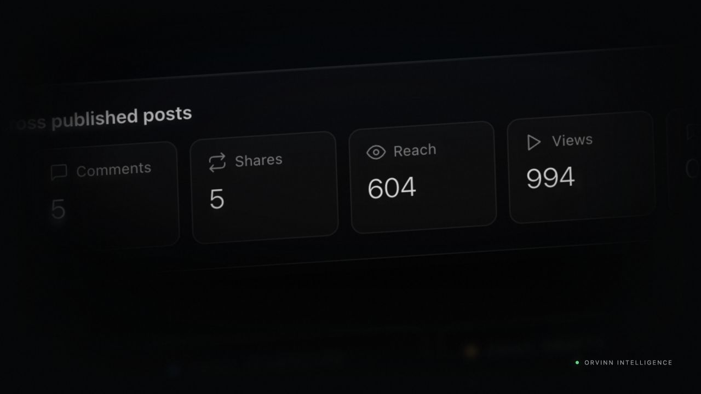

I'm a founder who builds on Vercel. I want to help other founders do it well.
I built and run Orvinn, a live AI marketing platform on Next.js and Vercel, using AI coding agents from the first commit to live billing. Before that, I spent years owning revenue directly, in real estate and social commerce.
- Stripe billing: tiers, seats, metered usageReady
- Square and Clover sales dataReady
- Mindbody, production approvedReady
- Mailchimp and Constant Contact exportReady
- Agency workspaces and team rolesReady
- AI review flow with version historyReady
- Status page and uptime monitoringReady
I've sat on the founder's side of the table, and I've carried a number.
I've made the early calls
Pricing, how to keep each client's data separate, which outside services to connect, how to bill for usage without surprising customers. I've made those decisions and lived with the tradeoffs, so I can talk with founders about theirs.
I work the way AI-native teams work
I build with AI coding agents every day. Claude writes the code; I own the product, the decisions, and the shipping. That's the shift many of Vercel's startup customers are going through right now.
I own outcomes, not just conversations
$4.7M+ in documented real estate sales and $100K+ in social commerce sales, each built on trust and follow-through. The best deals I've closed came from clients who were genuinely better off.
What I've built
Real products, live today, with the decisions behind them.

Orvinn
AI marketing automation for small businesses, real estate professionals, and agencies. It turns a business's own data, like sales, class schedules, and listings, into social posts, email campaigns, and reports.
- Subscription billing with three tiers, per-seat pricing, and metered overages through Stripe.
- Connections to Square, Clover, Mindbody, Mailchimp, Constant Contact, and Facebook, Instagram, and Google publishing, built on one shared pattern so each new provider is faster than the last.
- An agency mode where one account manages many client workspaces, with team roles and an AI-assisted review and approval flow.
- GitHub-to-Vercel deploys, scheduled background jobs, and a public status page.
A lesson I'd share with any founder: I first capped usage by counting AI generations, then realized customers think in published posts. Pricing on what the customer values, with a separate quiet limit to protect AI costs, is the cleaner design, and it's what I'm moving to.
GarzonRE
Bilingual Miami real estate brand, brokered by Fortune Christie's International Real Estate. Documented sales from first conversation to closing.
Visit garzonre.comRicambi OEM
Owned the Instagram sales channel: $18K in a single 25-day stretch and $100K+ over ten months.
View on InstagramLucas
An experimental AI agent that finds, bids on, and completes research tasks on AI agent marketplaces. Runs on its own Vercel project and database, with guardrails I can tighten or loosen at any time.
View Lucas's profileRoute Helper
A small operations app for coordinating delivery times and calculating driver payouts.
Open Route HelperExperience
- 2025 – nowFounder and product builder, Orvinn (Garzon Labs)
Building and running an AI marketing platform on Vercel.
- CurrentLicensed Florida realtor and founder, GarzonRE
Miami and Brickell, brokered by Fortune Christie's International Real Estate. $4.7M+ in documented sales.
- 2020 – 2024Social media and design production manager, Ricambi OEM
Owned the Instagram sales channel and product catalog.
- 2017 – 2018Marketing coordinator, Riva Motorsports
Campaigns, email, web, and monthly events of about 120 attendees.
- 2013 – 2017Web production specialist, MEDNAX Medical Group
Maintained 12 medical-practice websites and turned technical healthcare information into clear communication.